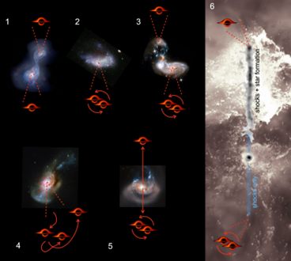

A black hole the mass of 20 000 000 suns leaving a trail of 200,000 new stars. It was discovered by accident using the Hubble telescope. It probably happened when the universe was at half its current age, but the light is just now reaching us.

The most agreed upon theory scientists currently have is that 2 galaxies merged together bringing together 2 supermassive black holes, which circled around each other peacefully until a third galaxy pushed in, creating a very chaotic scene. Eventually, one of the black holes was ejected at 5.6 million kilometres an hour, roughly 4.5 thousand times the speed of sound. While it is the first runaway black hole discovered, it is probably not the only one to exist.

Scientists think the gas in front of the black hole is being blasted and warmed by the supersonic impact of the black hole. This gas then collapses together into stars, causing the star trail. As it is the first time ever seeing this kind of thing, no-one really knows for sure what is happening.
Black holes usually pull things toward them, devouring other matter in a way not even light can escape. It is very unusual to see what we do now, and has never been seen in recorded history.
< Back to Homepage